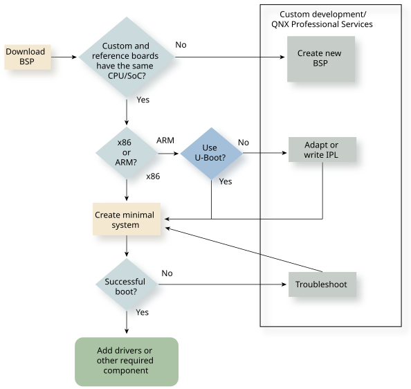
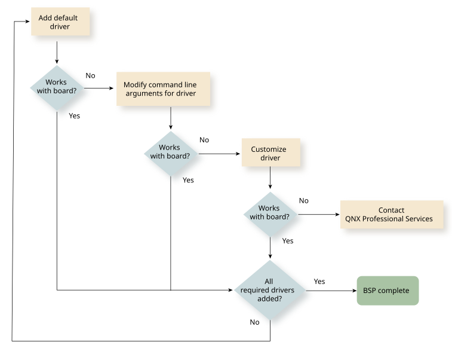

BSP development begins with a reference BSP from QNX.
The availability of compatible BSP components and your board’s specifications determine which options you select for loading and booting the OS. Generally speaking, the goal is to successfully complete a step of the boot process before proceeding to the next step.
An alternative to developing custom BSP components yourself is QNX Professional Services, which is available to create custom BSP content, including drivers.

Before you attempt to customize an existing BSP, familiarize yourself with the overall process of booting a QNX system on a target platform. This process includes obtaining a BSP and using it to build a bootable image that you transfer from your host system to your target board.
You can then select a BSP to use as a starting point for your custom BSP.
For information about obtaining a BSP, its structure, and the Makefile instructions that build a target image, see “Working with QNX BSPs” in the Building Embedded Systems guide.
Traditionally, when an x86 system boots, it provides some sort of first-stage OS loader. In older systems, this first-stage loader was the BIOS. Newer systems replace the x86 BIOS with a UEFI (Unified Extensible Firmware Interface), which provides a method for loading the OS image from the boot device and enhanced features that the system can use at runtime. In general, x86 systems allow you to load the QNX boot image using whatever boot method the hardware provides (that is, the same loader you would use to load an operating system such as Windows or Linux).
ARM-based platforms also traditionally provide a bootloader with the reference hardware. In newer systems, the U-Boot loader is the most common bootloader that ARM targets provide. You can use U-Boot to load a QNX OS image into the target’s memory, the same as you would any other OS. In addition, QNX often provides a native bootloader, known as the Initial Program Loader (IPL). You normally use the IPL instead of U-Boot to accelerate the boot process or for boot operation configuration that cannot be performed using U-Boot. When you migrate an existing BSP to a new target board, QNX recommends that you use U-Boot as the bootloader for the new target board until you have completed porting all the BSP components.
Using U-Boot).
The IPL has to be customized for the hardware to correctly configure the memory controller, set the clocks, and perform other hardware initializations.
Full information about the IPLs for each type of board, see Initial Program Loaders (IPLs) in the Building Embedded Systems guide.During the development process, it can be helpful to use U-Boot to manually boot the hardware and load the OS, even if your board supports the QNX IPL. For example, using U-Boot allows you to eliminate the IPL as a possible source of a booting problem.
In most cases, the final BSP uses an IPL because it is faster and is designed specifically to bring up with QNX OS.
On older embedded systems, the CPU was usually a stand-alone device and all other functionality was implemented via external Integrated Circuits (ICs). For example, a board with a CPU, a network interface IC, a USB Host Controller IC, a serial UART, an external host/PCI bridge device, and so on. For this type of board architecture, it was often not feasible to try to adapt the QNX BSP for a reference design to a different board with the same CPU because the new board could have different external peripherals and require you to update or replace all of the device drivers for peripheral devices.
Newer embedded systems are increasingly using System on a Chip (SoC) processors, where the CPU core is coupled with a variety of different peripheral interfaces within the same IC package. With an SoC, when you port a BSP from a reference board to a new board using the same IC, you can re-use all of the device drivers in the BSP (or at least all the ones for peripherals contained within the SoC), with minimal changes. In this document, discussions about customizing BSPs assume that the target embedded system you are porting the BSP to uses the same SoC as the hardware that the reference BSP was developed for.
Attempting to boot QNX OS on your board with the bare minimum number of services allows you to isolate any problems. To create a minimal system, edit the OS image buildfile to exclude any services or other components that are not necessary for a baseline, functioning OS.
The primary module you need to adapt to get a minimal QNX system working on a new target is the QNX startup module. For more information about the startup module, see the Startup documentation.
For information about building an OS image, see OS Images and OS Image Buildfiles in Building Embedded Systems.
Each QNX BSP provides a variety of device drivers for the various peripherals found on the target hardware that the BSP is intended for. In general, you can re-use all device drivers for peripherals that are internal to the SoC without any modification if that the pinmux and GPIO configuration for those peripherals is properly addressed in the startup code.

In many cases, only minor modifications to the device driver’s command line or syspage are necessary to enable a driver from a reference BSP to operate properly on the new target board. You can specify all parameters such as IRQ, I/O port, clock speed, and so on, on the command line. Use the command line examples from the reference BSP to determine what changes (if any) you need to make for your custom hardware.
For more information about drivers and instructions for writing one and adding it to your BSP, see Writing a Resource Manager.